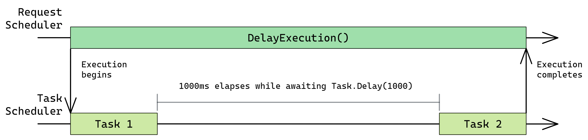
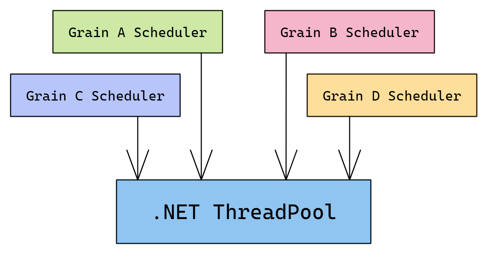
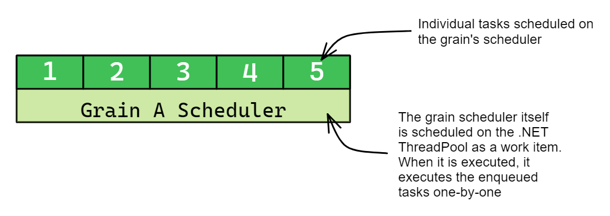
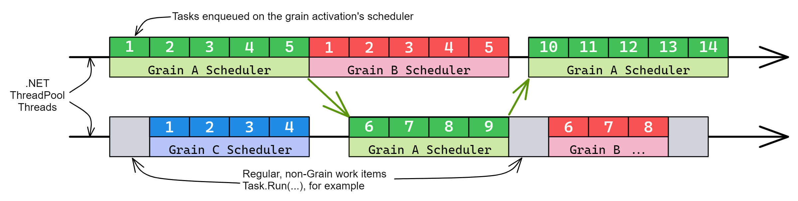
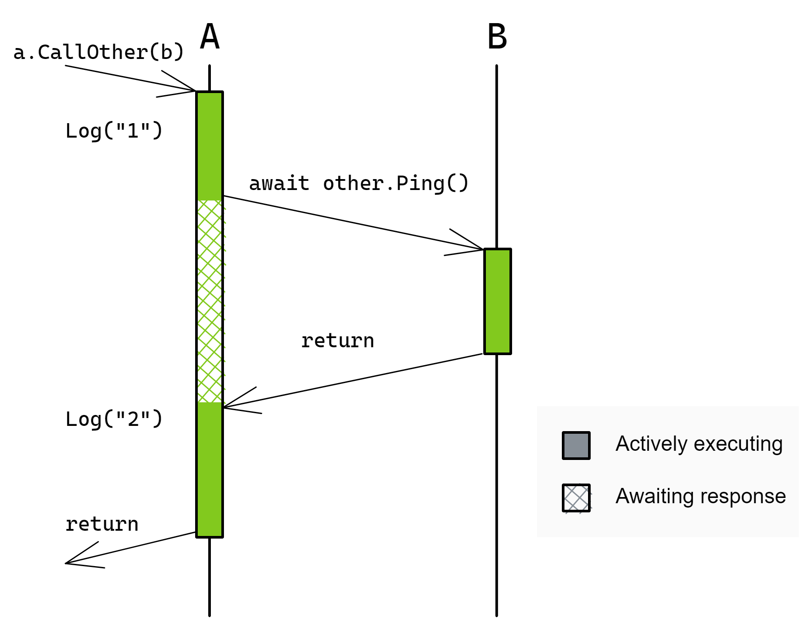
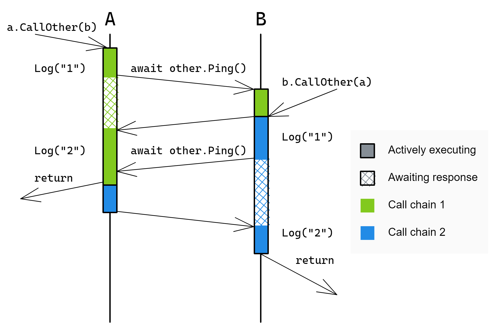
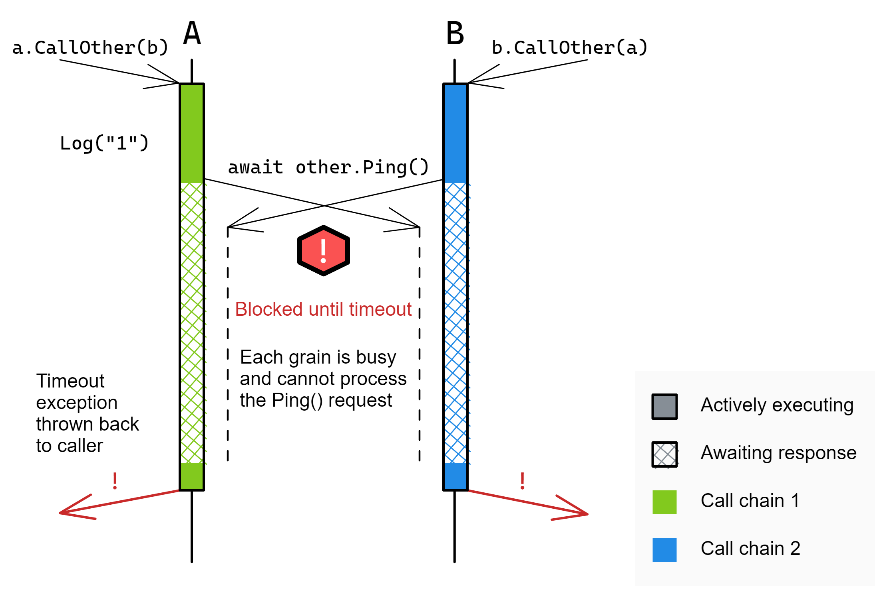
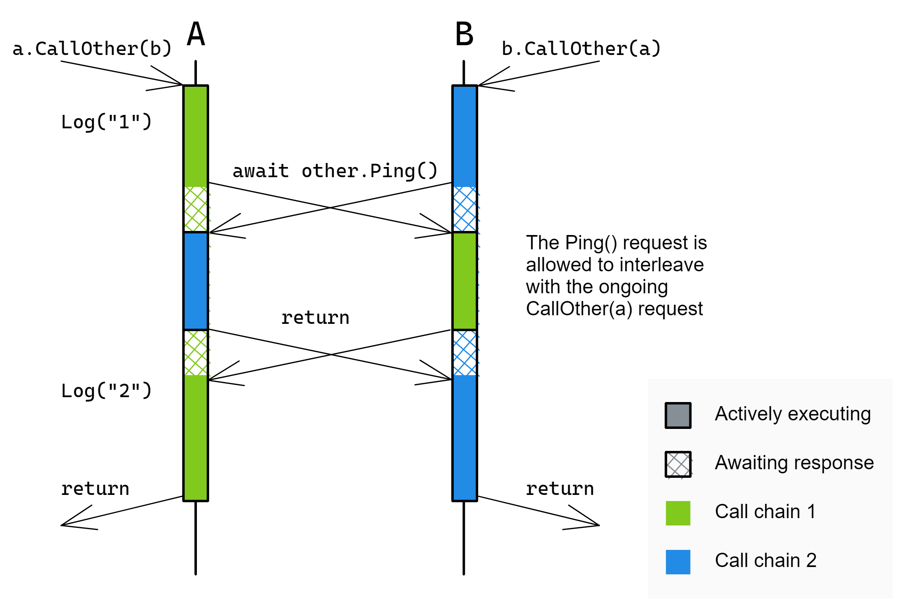

Scheduling
There are two forms of scheduling in Orleans which are relevant to grains:
- Request scheduling, the scheduling of incoming grain calls for execution according to scheduling rules discussed below
- Task scheduling, the scheduling of synchronous blocks of code to be executed in a single-threaded manner
All grain code is executed on the grain's task scheduler, which means that requests are also executed on the grain's task scheduler. Even if the request scheduling rules allow multiple requests to execute concurrently, they will not execute in parallel because the grain's task scheduler always executes tasks one-by-one and hence never executes multiple tasks in parallel.
Task scheduling
To better understand scheduling, consider the following grain, MyGrain, which has a method called DelayExecution() which logs a message, waits some time, then logs another message before returning.
public interface IMyGrain : IGrain
{
public Task DelayExecution();
}
public class MyGrain : Grain, IMyGrain
{
private readonly ILogger<MyGrain> _logger;
public MyGrain(ILogger<MyGrain> logger) => _logger = logger;
public async Task DelayExecution()
{
_logger.LogInformation("Executing first task");
await Task.Delay(1000);
_logger.LogInformation("Executing second task");
}
}
When this method is executed, the method body will be executed in two parts:
- The first
_logger.LogInformation(...)call and the call toTask.Delay(1000) - The second
_logger.LogInformation(...)call
The second task will not be scheduled on the grain's task scheduler until the Task.Delay(1000) call completes, at which point it will schedule the continuation of the grain method.
Here is a graphical representation of how a request is scheduled and executed as two tasks:

Note that the above description is not specific to Orleans and is instead how task scheduling in .NET works: asynchronous methods in C# are converted into an asynchronous state machine by the compiler and execution progresses through the asynchronous state machine in discrete steps.
Each step is scheduled on the current TaskScheduler (accessed via TaskScheduler.Current, defaulting to TaskScheduler.Default) or the current SynchronizationContext.
If a TaskScheduler is being used, each step in the method is represented by a Task instance which is passed to that TaskScheduler.
Therefore, a Task in .NET can represent two conceptual things:
- An asynchronous operation which can be waited on. The execution of the
DelayExecution()method above is represented by aTaskwhich can be awaited. - A synchronous block of work. Each stage within the
DelayExecution()method above is represented by aTask.
When TaskScheduler.Default is in use, continuations are scheduled directly onto the .NET ThreadPool and are not wrapped in a Task object.
The wrapping of continuations in Task instances occurs transparently and therefore developers rarely need to be aware of these implementation details.
Task scheduling in Orleans
Each grain activation has its own TaskScheduler instance which is responsible for enforcing the single threaded execution model of grains.
Internally, this TaskScheduler is implemented via ActivationTaskScheduler and WorkItemGroup.
WorkItemGroup keeps enqueued tasks in a Queue<Task> internally and implements IThreadPoolWorkItem.
In order to execute each currently enqueued Task, WorkItemGroup schedules itself on the .NET ThreadPool. When the .NET ThreadPool invokes the WorkItemGroup's IThreadPoolWorkItem.Execute() method, the WorkItemGroup executes the enqueued Task instances one-by-one.
Each grain has a scheduler which executes by scheduling itself on the .NET ThreadPool:

Each scheduler contains a queue of tasks:

The .NET ThreadPool executes each work item enqueued to it. This includes grain schedulers as well as other work items, such as work items scheduled via Task.Run(...):

Note that a grain's scheduler can only execute on one thread at a time, but it does not always execute on the same thread. The .NET ThreadPool is free to use a different thread each time the grain's scheduler is executed. The grain's scheduler is responsible for making sure that it only executes on one thread at a time and this is how the single threaded execution model of grains is implemented.
External Tasks and Grains
By design, any sub-Tasks spawned from grain code (for example, by using await or ContinueWith or Task.Factory.StartNew) will be dispatched on the same per-activation TaskScheduler as the parent task and therefore inherit the same single-threaded execution model as the rest of grain code.
This is the main point behind single threaded execution of grain turn based concurrency.
In some cases grain code might need to “break out” of the Orleans task scheduling model and “do something special”, such as explicitly pointing a Task to a different task scheduler or the .NET ThreadPool.
An example of such cases is when grain code has to execute a synchronous remote blocking call (such as remote IO).
Executing that blocking call in the grain context will block the grain and thus should never be made.
Instead, the grain code can execute this piece of blocking code on the thread pool thread and join (await) the completion of that execution and proceed in the grain context.
We expect that escaping from the Orleans scheduler will be a very advanced and seldom required usage scenario beyond the “normal” usage patterns.
Task-based APIs
await,Task.Factory.StartNew(see below),Task.ContinueWith,Task.WhenAny,Task.WhenAll,Task.Delayall respect the current task scheduler. That means that using them in the default way, without passing a different TaskScheduler, will cause them to execute in the grain context.Both
Task.Runand theendMethoddelegate ofTask.Factory.FromAsyncdo not respect the current task scheduler. They both use theTaskScheduler.Defaultscheduler, which is the .NET thread pool task scheduler. Therefore, the code insideTask.Runand theendMethodinTask.Factory.FromAsyncwill always run on the .NET thread pool outside of the single-threaded execution model for Orleans grains, as detailed here. However, any code after theawait Task.Runorawait Task.Factory.FromAsyncwill run back under the scheduler at the point the task was created, which is the grain's scheduler.ConfigureAwait(false)is an explicit API to escape the current task Scheduler. It will cause the code after an awaited Task to be executed on theTaskScheduler.Defaultscheduler, which is the .NET thread pool, and will thus break the single-threaded execution of the grain. You should in general never useConfigureAwait(false)directly in grain code.Methods with signature
async voidshould not be used with grains. They are intended for graphical user interface event handlers.async voidmethod can immediately crash the current process if they allow an exception to escape, with no way of handling the exception. This is also true forList<T>.ForEach(async element => ...)and any other method which accepts anAction<T>, since the asynchronous delegate will be coerced into anasync voiddelegate.
Task.Factory.StartNew and async delegates
The usual recommendation for scheduling tasks in any C# program is to use Task.Run in favor of Task.Factory.StartNew.
In fact, a quick google search on the use of Task.Factory.StartNew() will suggest that it is dangerous and that one should always favor Task.Run.
But if we want to stay in the grain's single-threaded execution model for our grain then we need to use it, so how do we do it correctly then?
The danger when using Task.Factory.StartNew() is that it does not natively support async delegates.
This means that this is likely a bug: var notIntendedTask = Task.Factory.StartNew(SomeDelegateAsync).
notIntendedTask is not a task that completes when SomeDelegateAsync does.
Instead, one should always unwrap the returned task: var task = Task.Factory.StartNew(SomeDelegateAsync).Unwrap().
Example
Below is sample code that demonstrates the usage of TaskScheduler.Current, Task.Run and a special custom scheduler to escape from Orleans grain context and how to get back to it.
public async Task MyGrainMethod()
{
// Grab the grain's task scheduler
var scheduler = TaskScheduler.Current;
await TaskDelay(10000);
// Current task scheduler did not change, the code after await is still running
// in the same task scheduler.
Assert.AreEqual(scheduler, TaskScheduler.Current);
Task t1 = Task.Run( () =>
{
// This code runs on the thread pool scheduler, not on Orleans task scheduler
Assert.AreNotEqual(orleansTS, TaskScheduler.Current);
Assert.AreEqual(TaskScheduler.Default, TaskScheduler.Current);
});
await t1;
// We are back to the Orleans task scheduler.
// Since await was executed in Orleans task scheduler context, we are now back
// to that context.
Assert.AreEqual(orleansTS, TaskScheduler.Current);
// Example of using Task.Factory.StartNew with a custom scheduler to escape from
// the Orleans scheduler
Task t2 = Task.Factory.StartNew(() =>
{
// This code runs on the MyCustomSchedulerThatIWroteMyself scheduler, not on
// the Orleans task scheduler
Assert.AreNotEqual(orleansTS, TaskScheduler.Current);
Assert.AreEqual(MyCustomSchedulerThatIWroteMyself, TaskScheduler.Current);
},
CancellationToken.None,
TaskCreationOptions.None,
scheduler: MyCustomSchedulerThatIWroteMyself);
await t2;
// We are back to Orleans task scheduler.
Assert.AreEqual(orleansTS, TaskScheduler.Current);
}
Example - making a grain call from code that runs on a thread pool
Another scenario is a piece of grain code that needs to “break out” of the grain's task scheduling model and run on a thread pool (or some other, non-grain context), but still needs to call another grain. Grain calls can be made from non-grain contexts without extra ceremony.
Below is code that demonstrates how a grain call can be made from a piece of code that runs inside a grain but not in the grain context.
public async Task MyGrainMethod()
{
// Grab the Orleans task scheduler
var scheduler = TaskScheduler.Current;
var fooGrain = this.GrainFactory.GetGrain<IFooGrain>(0);
Task<int> t1 = Task.Run(async () =>
{
// This code runs on the thread pool scheduler,
// not on Orleans task scheduler
Assert.AreNotEqual(orleansTS, TaskScheduler.Current);
int res = await fooGrain.MakeGrainCall();
// This code continues on the thread pool scheduler,
// not on the Orleans task scheduler
Assert.AreNotEqual(orleansTS, TaskScheduler.Current);
return res;
});
int result = await t1;
// We are back to the Orleans task scheduler.
// Since await was executed in the Orleans task scheduler context,
// we are now back to that context.
Assert.AreEqual(orleansTS, TaskScheduler.Current);
}
Working with libraries
Some external libraries that your code is using might be using ConfigureAwait(false) internally.
In fact, it is a good and correct practice in .NET to use ConfigureAwait(false) when implementing general purpose libraries.
This is not a problem in Orleans.
As long as the code in the grain that invokes the library method is awaiting the library call with a regular await, the grain code is correct.
The result will be exactly as desired – the library code will run continuations on the default scheduler (the value returned by TaskScheduler.Default, which does not guarantee that the continuations will definitely run on a ThreadPool thread as continuations are often inlined in the previous thread), while the grain code will run on the grain's scheduler.
Another frequently-asked question is whether there is a need to execute library calls with Task.Run – that is, whether there is a need to explicitly offload the library code to ThreadPool (for grain code to do Task.Run(() => myLibrary.FooAsync())).
The answer is no.
There is no need to offload any code to ThreadPool except for the case of library code that is making a blocking synchronous calls.
Usually, any well-written and correct .NET async library (methods that return Task and are named with an Async suffix) do not make blocking calls.
Thus there is no need to offload anything to ThreadPool unless you suspect the async library is buggy or if you are deliberately using a synchronous blocking library.
Deadlocks
Since grains execute in a single threaded fashion, it is possible to deadlock a grain by synchronously blocking in a way that would require multiple threads to unblock. This means that code which calls any of the following methods and properties can deadlock a grain if the provided tasks have not yet completed by the time the method or property is invoked:
Task.Wait()Task.ResultTask.WaitAny(...)Task.WaitAll(...)task.GetAwaiter().GetResult()
These methods should be avoided in any high-concurrency service because they can lead to poor performance and instability by starving the .NET ThreadPool by blocking threads which could be performing useful work and requiring the .NET ThreadPool to inject additional threads so that they can be completed.
When executing grain code, these methods, as mentioned above, can cause the grain to deadlock and therefore they should also be avoided in grain code.
If there is some sync-over-async work which cannot be avoided, it is best to move that work to a separate scheduler.
The simplest way to do this is to use await Task.Run(() => task.Wait()) for example.
Please note that it is strongly recommended to avoid sync-over-async work since, as mentioned above, it will cause your application's scalability and performance to suffer.
Summary: working with Tasks in Orleans
| What are you trying to do? | How to do it |
|---|---|
| Run background work on .NET thread-pool threads. No grain code or grain calls allowed. | Task.Run |
| Run asynchronous worker task from grain code with Orleans turn-based concurrency guarantees (see above). | Task.Factory.StartNew(WorkerAsync).Unwrap() |
| Run synchronous worker task from grain code with Orleans turn-based concurrency guarantees. | Task.Factory.StartNew(WorkerSync) |
| Timeouts for executing work items | Task.Delay + Task.WhenAny |
| Call an asynchronous library method | await the library call |
Use async/await |
The normal .NET Task-Async programming model. Supported & recommended |
ConfigureAwait(false) |
Do not use inside grain code. Allowed only inside libraries. |
Request scheduling
Grain activations have a single-threaded execution model and, by default, process each request from beginning to completion before the next request can begin processing. In some circumstances, it may be desirable for an activation to process other requests while one request is waiting for an asynchronous operation to complete. For this and other reasons, Orleans gives the developer some control over the request interleaving behavior, as described below in the Reentrancy section. What follows is an example of non-reentrant request scheduling, which is the default behavior in Orleans.
Our initial examples with focus on the following PingGrain definition:
public interface IPingGrain : IGrainWithStringKey
{
Task Ping();
Task CallOther(IPingGrain other);
}
public class PingGrain : Grain, IPingGrain
{
private readonly ILogger<PingGrain> _logger;
public PingGrain(ILogger<PingGrain> logger) => _logger = logger;
public Task Ping() => Task.CompletedTask;
public async Task CallOther(IPingGrain other)
{
_logger.LogInformation("1");
await other.Ping();
_logger.LogInformation("2");
}
}
Two grains of type PingGrain are involved in our example, A and B.
A caller invokes the following call:
var a = grainFactory.GetGrain("A");
var b = grainFactory.GetGrain("A");
await a.CallOther(b);

The flow of execution is as follows:
- The call arrives at A, which logs
"1"and then issues a call to B - B returns immediately from
Ping()back to A - A logs
"2"an returns back to the original caller
While A is awaiting the call to B, it cannot process any incoming requests. Because of this, if A and B were to call each other simultaneously, they may deadlock while waiting for those calls to complete. Here is an example, based on the client issuing the following call:
var a = grainFactory.GetGrain("A");
var b = grainFactory.GetGrain("A");
// A calls B at the same time as B calls A.
// This might deadlock, depending on the non-deterministic timing of events.
await Task.WhenAll(a.CallOther(b), b.CallOther(a));
Case 1: the calls do not deadlock

In this example:
- The
Ping()call from A arrives at B before theCallOther(a)call arrives at B. - Therefore, B processes the
Ping()call before theCallOther(a)call. - Because B processes the
Ping()call, A is able to return back to the caller. - When B issues its
Ping()call to A, A is still busy logging its message ("2"), so the call has to wait a short duration, but it is soon able to be processed. - A processes the
Ping()call and returns to B which returns to the original caller.
Now, we will examine a less fortunate series of events: one in which the same code results in a deadlock due to slightly different timing.
Case 2: the calls deadlock

In this example:
- The
CallOthercalls arrive at their respective grains and are processed simultaneously. - Both grains log
"1"and proceed toawait other.Ping(). - Since both grains are still busy (processing the
CallOtherrequest, which has not finished yet), thePing()requests wait - After some period of time, Orleans determines that the call has timed out and each
Ping()call results in an exception being thrown. - This exception is not handled by the
CallOthermethod body and so it bubbles up to the original caller.
The following section describes how to prevent deadlocks by allowing multiple requests to interleave their execution with each other.
Reentrancy
Orleans defaults to choosing a safe execution flow: one in which the internal state of a grain is not modified concurrently by multiple requests. Concurrent modification of internal state complicates logic and puts a greater burden on the developer. This protection against those kinds of concurrency bugs has a cost which we saw above, primarily liveness: certain call patterns can lead to deadlocks. One way to avoid deadlocks is to ensure that grain calls never form a cycle. Often times, it is difficult to write code which is cycle-free and cannot deadlock. Waiting for each request to run from beginning to completion before processing the next request can also hurt performance. For example, by default, if a grain method performs some asynchronous request to a database service then the grain will pause request execution until the response from the database arrives at the grain.
Each of those cases are discussed in the sections which follow. For these reasons, Orleans provides developers with options to allow some or all requests to be executed concurrently, interleaving their execution with each other. In Orleans, this is called reentrancy or interleaving. By executing requests concurrently, grains which perform asynchronous operations can process more requests in a shorter period of time.
Multiple requests may be interleaved in the following cases:
- The grain class is marked as
[Reentrant] - The interface method is marked as
[AlwaysInterleave] - The grain's
[MayInterleave(x)]predicate returnstrue
With reentrancy, the following case becomes a valid execution and the possibility of the above deadlock is removed.
Case 3: the grain or method is reentrant

In this example, grains A and B are able to call each other simultaneously without any potential for request scheduling deadlocks because both grains are reentrant. The following sections provide more details on reentrancy.
Reentrant grains
Grain implementation classes may be marked with the [Reentrant] attribute to indicate that different requests may be freely interleaved.
In other words, a reentrant activation may start executing another request while a previous request has not finished processing. Execution is still limited to a single thread, so the activation is still executing one turn at a time, and each turn is executing on behalf of only one of the activation’s requests.
Reentrant grain code will never run multiple pieces of grain code in parallel (execution of grain code will always be single-threaded), but reentrant grains may see the execution of code for different requests interleaving. That is, the continuation turns from different requests may interleave.
For example, with the pseudo-code below, when Foo and Bar are 2 methods of the same grain class:
Task Foo()
{
await task1; // line 1
return Do2(); // line 2
}
Task Bar()
{
await task2; // line 3
return Do2(); // line 4
}
If this grain is marked [Reentrant], the execution of Foo and Bar may interleave.
For example, the following order of execution is possible:
Line 1, line 3, line 2 and line 4. That is, the turns from different requests interleave.
If the grain was not reentrant, the only possible executions would be: line 1, line 2, line 3, line 4 OR: line 3, line 4, line 1, line 2 (a new request cannot start before the previous one finished).
The main tradeoff in choosing between reentrant and non-reentrant grains is the code complexity to make interleaving work correctly, and the difficulty to reason about it.
In a trivial case when the grains are stateless and the logic is simple, fewer (but not too few, so that all the hardware threads are used) reentrant grains should, in general, be slightly more efficient.
If the code is more complex, then a larger number of non-reentrant grains, even if slightly less efficient overall, should save you a lot of grief of figuring out non-obvious interleaving issues.
In the end, the answer will depend on the specifics of the application.
Interleaving methods
Grain interface methods marked with [AlwaysInterleave] will be interleaved regardless of whether the grain is reentrant or not. Consider the following example:
public interface ISlowpokeGrain : IGrainWithIntegerKey
{
Task GoSlow();
[AlwaysInterleave]
Task GoFast();
}
public class SlowpokeGrain : Grain, ISlowpokeGrain
{
public async Task GoSlow()
{
await Task.Delay(TimeSpan.FromSeconds(10));
}
public async Task GoFast()
{
await Task.Delay(TimeSpan.FromSeconds(10));
}
}
Now consider the call flow initiated by the following client request:
var slowpoke = client.GetGrain<ISlowpokeGrain>(0);
// A) This will take around 20 seconds
await Task.WhenAll(slowpoke.GoSlow(), slowpoke.GoSlow());
// B) This will take around 10 seconds.
await Task.WhenAll(slowpoke.GoFast(), slowpoke.GoFast(), slowpoke.GoFast());
Calls to GoSlow will not be interleaved, so the execution of the two GoSlow() calls will take around 20 seconds.
On the other hand, because GoFast is marked [AlwaysInterleave], the three calls to it will be executed concurrently and will complete in approximately 10 seconds total instead of requiring at least 30 seconds to complete.
Reentrancy using a predicate
Grain classes can specify a predicate to determine interleaving on a call-by-call basis by inspecting the request.
The [MayInterleave(string methodName)] attribute provides this functionality.
The argument to the attribute is the name of a static method within the grain class which accepts an InvokeMethodRequest object and returns a bool indicating whether or not the request should be interleaved.
Here is an example which allows interleaving if the request argument type has the [Interleave] attribute:
[AttributeUsage(AttributeTargets.Class | AttributeTargets.Struct)]
public sealed class InterleaveAttribute : Attribute { }
// Specify the may-interleave predicate.
[MayInterleave(nameof(ArgHasInterleaveAttribute))]
public class MyGrain : Grain, IMyGrain
{
public static bool ArgHasInterleaveAttribute(InvokeMethodRequest req)
{
// Returning true indicates that this call should be interleaved with other calls.
// Returning false indicates the opposite.
return req.Arguments.Length == 1
&& req.Arguments[0]?.GetType().GetCustomAttribute<InterleaveAttribute>() != null;
}
public Task Process(object payload)
{
// Process the object.
}
}